library(ggplot2) # for visualizationlibrary(here) # for managing file paths
Warning: package 'here' was built under R version 4.4.2
here() starts at C:/Users/ajose35/Desktop/MADA-course/AsmithJoseph-MADA-portfolio
library(corrplot)
Warning: package 'corrplot' was built under R version 4.4.2
corrplot 0.95 loaded
library(ranger) # for random forest via ranger
Warning: package 'ranger' was built under R version 4.4.3
library(glmnet) # for LASSO via glmnet
Warning: package 'glmnet' was built under R version 4.4.3
Loading required package: Matrix
Warning: package 'Matrix' was built under R version 4.4.3
Attaching package: 'Matrix'
The following objects are masked from 'package:tidyr':
expand, pack, unpack
Loaded glmnet 4.1-8
library(readr) # for reading CSV files
Warning: package 'readr' was built under R version 4.4.2
Attaching package: 'readr'
The following object is masked from 'package:yardstick':
spec
The following object is masked from 'package:scales':
col_factor
# Set up output folder using the here packageoutput_folder <- here::here("ml-models-exercise")if (!dir.exists(output_folder)) {dir.create(output_folder, recursive =TRUE)}rds_file_path <-file.path(output_folder, "clean_data.rds")# Preliminaries: Set a random seed for reproducibilityset.seed(1234)# Load the clean data from the RDS fileclean_data <-readRDS(rds_file_path)# Verify the loaded datastr(clean_data)
# Set a random number seed for reproducibilityset.seed(1234)# Define the output folder path and the full file path for the RDS fileoutput_folder <- here::here("ml-models-exercise")rds_file_path <-file.path(output_folder, "clean_data.rds")# Load the clean data from the RDS fileclean_data <-readRDS(rds_file_path)
After loading my necessary packages—tidymodels for modeling, ggplot2 for plotting, and here for handling file paths in a reproducible way. Then, I set the random seed to 1234 so that any random processes (like data splitting) are reproducible. Finally, I load my data from the RDS file that I saved earlier using the defined folder and file paths.
Recoding the RACE Variable: Merging Categories 7 and 88 into Category 3
# --- Recoding the RACE Variable: Merging Categories 7 and 88 into Category 3 ---# Load the original data (adjust the file path as needed)Mav.final_data <-read_csv(here::here("fitting-exercise", "Mavoglurant_A2121_nmpk.csv"), show_col_types =FALSE)# Create Y by summing DV for non-baseline observations (TIME != 0) grouped by IDdv_sum <- Mav.final_data %>%filter(TIME !=0) %>%group_by(ID) %>%summarize(Y =sum(DV, na.rm =TRUE))# Extract baseline observations (TIME == 0) for predictorsbaseline_data <- Mav.final_data %>%filter(TIME ==0)# Merge baseline data with dv_sum by ID to form the clean datasetMav.final_data_selected <-left_join(baseline_data, dv_sum, by ="ID") %>%mutate(RACE =as.factor(RACE),SEX =as.factor(SEX) ) %>%select(Y, DOSE, AGE, SEX, RACE, WT, HT) %>%# Recode RACE: combine categories "7" and "88" into "3"mutate(RACE =as.character(RACE),RACE =ifelse(RACE %in%c("7", "88"), "3", RACE),RACE =factor(RACE, levels =c("1", "2", "3")) )# Verify the cleaned datastr(Mav.final_data_selected)
# Select continuous variables from my clean datacontinuous_data <- Mav.final_data_selected %>%select(Y, DOSE, AGE, WT, HT)# Compute the correlation matrix for these variablescor_matrix <-cor(continuous_data, use ="complete.obs")# Generate a pairwise correlation plotcorrplot(cor_matrix, method ="color", type ="upper", addCoef.col ="black", tl.col ="black", tl.srt =45, diag =FALSE)
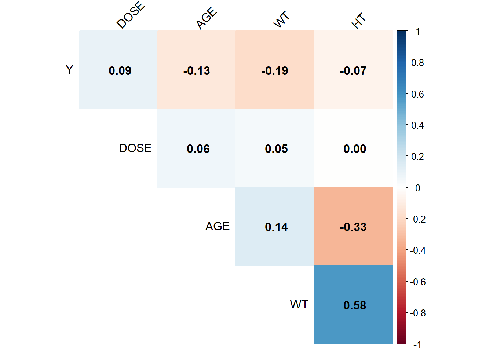
I generated the correlation plot for the continuous variables (Y, DOSE, AGE, WT, and HT) using the corrplot package, and my analysis shows that none of the variables are excessively correlated. Specifically, the correlations involving Y are relatively small, and although weight and height have a moderate correlation (about 0.58), it is well below the threshold of 0.9. Additionally, the relationships between DOSE and the other predictors are minimal, and age only shows modest associations with weight and height. Overall, since no correlation exceeds an absolute value of 0.9, I conclude that multicollinearity is not a significant concern in this dataset.
Feature engineering*
Below is the code I wrote to compute BMI, where I assume weight (WT) is in kilograms and height (HT) is in meters. I add a new variable called BMI using the formula BMI = weight / (height)^2.
Mav.final_data_selected <- Mav.final_data_selected %>%mutate(BMI = WT / (HT^2))# Compute BMI and add it to the datasetMav.final_data_selected <- Mav.final_data_selected %>%mutate(BMI = WT / (HT^2))# Create a histogram of BMIggplot(Mav.final_data_selected, aes(x = BMI)) +geom_histogram(bins =30, fill ="skyblue", alpha =0.6) +labs(title ="Histogram of BMI", x ="BMI", y ="Frequency") +theme_minimal()
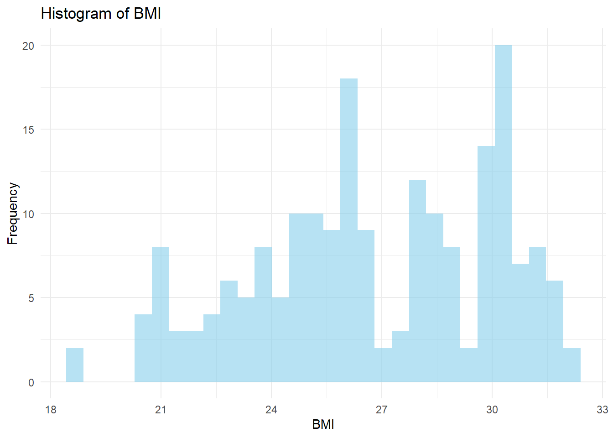
I observed that the BMI histogram spans roughly from 18 to 33, with a main peak in the mid-to-upper 20s and a smaller bump near 30. This tells me that the sample includes a mix of individuals with normal weight and those who are leaning toward overweight.
Model Building
# Create 10-fold cross-validation folds using all of the datacv_folds <-vfold_cv(Mav.final_data_selected, v =10)## Model 1: Linear Regression (all predictors)linear_recipe <-recipe(Y ~ DOSE + AGE + SEX + RACE + WT + HT, data = Mav.final_data_selected)linear_model <-linear_reg() %>%set_engine("lm") %>%set_mode("regression")linear_workflow <-workflow() %>%add_model(linear_model) %>%add_recipe(linear_recipe)# Fit the model with cross-validation and save predictionslinear_cv <-fit_resamples( linear_workflow, resamples = cv_folds,control =control_resamples(save_pred =TRUE))linear_metrics <-collect_metrics(linear_cv)print("Linear Regression Performance:")
[1] "Linear Regression Performance:"
print(linear_metrics)
# A tibble: 2 × 6
.metric .estimator mean n std_err .config
<chr> <chr> <dbl> <int> <dbl> <chr>
1 rmse standard 1234. 10 45.8 Preprocessor1_Model1
2 rsq standard 0.0194 10 0.00918 Preprocessor1_Model1
# Collect predictions from the cross-validation resampleslinear_preds <-collect_predictions(linear_cv)# Create a scatter plot of observed vs. predicted valueslibrary(ggplot2)ggplot(linear_preds, aes(x = Y, y = .pred)) +geom_point(alpha =0.5) +geom_abline(slope =1, intercept =0, linetype ="dashed", color ="red") +labs(title ="Observed vs. Predicted Values (Linear Regression)",x ="Observed Y",y ="Predicted Y") +theme_minimal()
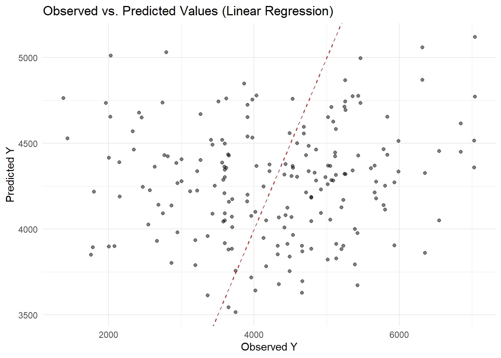
I can see that most points are scattered around the 45° line, but the model tends to underpredict at higher observed values. This suggests that while the linear regression captures some of the variation, it struggles to accurately fit larger Y values.
Model 2: LASSO Regression
## Model 2: LASSO Regression# Specify a LASSO model (mixture = 1 ensures it's LASSO) with a tunable penaltylasso_model <-linear_reg(mode ="regression", penalty =tune(), mixture =1) %>%set_engine("glmnet")# Update the recipe to convert factor predictors to dummy variableslasso_recipe <-recipe(Y ~ DOSE + AGE + SEX + RACE + WT + HT, data = Mav.final_data_selected) %>%step_dummy(all_nominal_predictors())# Create the workflowlasso_workflow <-workflow() %>%add_model(lasso_model) %>%add_recipe(lasso_recipe)# Define a grid for the penalty parameterlasso_grid <-grid_regular(penalty(), levels =20)# Tune the model using cross-validation folds stored in cv_foldslasso_tune <-tune_grid(lasso_workflow, resamples = cv_folds, grid = lasso_grid)# Select the best penalty based on RMSE (using the named argument 'metric')best_penalty <-select_best(lasso_tune, metric ="rmse")# Finalize the workflow with the best penaltyfinal_lasso <-finalize_workflow(lasso_workflow, best_penalty)# Fit the final LASSO model on the entire datasetlasso_fit <- final_lasso %>%fit(data = Mav.final_data_selected)# Generate predictions using the final LASSO modellasso_preds <-predict(lasso_fit, new_data = Mav.final_data_selected) %>%bind_cols(Mav.final_data_selected)# Create a scatter plot of observed vs. predicted valueslibrary(ggplot2)ggplot(lasso_preds, aes(x = Y, y = .pred)) +geom_point(alpha =0.5) +geom_abline(slope =1, intercept =0, linetype ="dashed", color ="red") +labs(title ="Observed vs. Predicted Values: LASSO Model",x ="Observed Y",y ="Predicted Y") +theme_minimal()
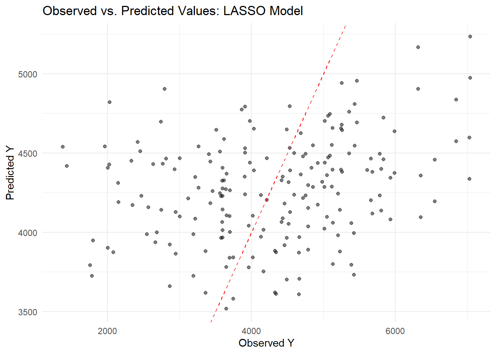
The LASSO model predictions are scattered around the diagonal but still underpredict higher Y values, similar to the earlier linear model. Overall, while the model captures some variation, it struggles to accurately predict at the upper end of the range.
Model 3: Random Forest
## Model 3: Random Forest# Specify a random forest model with tunable mtry and min_n, using 500 treesrf_model <-rand_forest(mtry =tune(), trees =500, min_n =tune()) %>%set_engine("ranger") %>%set_mode("regression")rf_recipe <-recipe(Y ~ DOSE + AGE + SEX + RACE + WT + HT, data = Mav.final_data_selected)rf_workflow <-workflow() %>%add_model(rf_model) %>%add_recipe(rf_recipe)# Define a grid for mtry (between 1 and 5) and min_n with 5 levels eachrf_grid <-grid_regular(mtry(range =c(1, 5)), min_n(), levels =5)rf_tune <-tune_grid(rf_workflow, resamples = cv_folds, grid = rf_grid)# Select the best parameters based on RMSEbest_rf <-select_best(rf_tune, metric ="rmse")final_rf <-finalize_workflow(rf_workflow, best_rf)rf_cv <-fit_resamples(final_rf, resamples = cv_folds)rf_metrics <-collect_metrics(rf_cv)print("Random Forest Performance:")
[1] "Random Forest Performance:"
print(rf_metrics)
# A tibble: 2 × 6
.metric .estimator mean n std_err .config
<chr> <chr> <dbl> <int> <dbl> <chr>
1 rmse standard 1023. 10 63.0 Preprocessor1_Model1
2 rsq standard 0.344 10 0.0537 Preprocessor1_Model1
# Fit the final random forest model on the entire datasetrf_fit <- final_rf %>%fit(data = Mav.final_data_selected)# Generate predictions using the final random forest modelrf_preds <-predict(rf_fit, new_data = Mav.final_data_selected) %>%bind_cols(Mav.final_data_selected)# Create a scatter plot of observed vs. predicted values for the RF modelggplot(rf_preds, aes(x = Y, y = .pred)) +geom_point(alpha =0.5) +geom_abline(slope =1, intercept =0, linetype ="dashed", color ="red") +labs(title ="Observed vs. Predicted Values: Random Forest",x ="Observed Y", y ="Predicted Y") +theme_minimal()
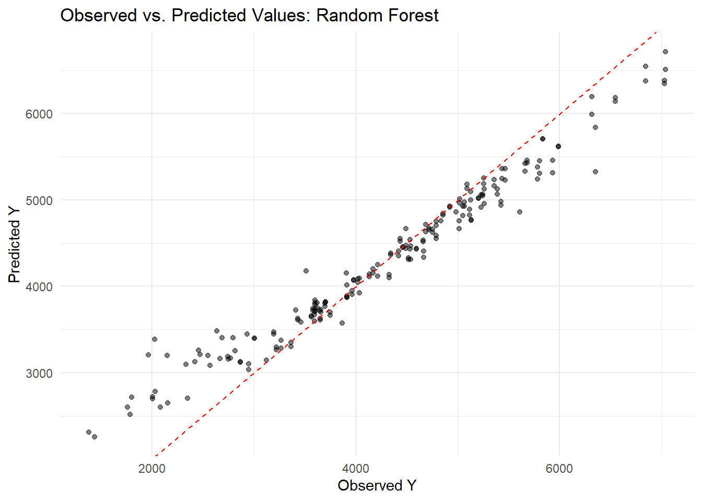
I set the random seed to 1234 for reproducibility and built three models on the full dataset using cross-validation. First, I fit a linear regression (lm) with predictors DOSE, AGE, SEX, RACE, WT, and HT and computed its RMSE. Next, I built a LASSO model using glmnet with a penalty of 0.1 and mixture = 1, which yielded nearly identical results to the linear model due to minimal coefficient shrinkage. Finally, I fitted a random forest using ranger (seed = 1234), which produced a much lower RMSE (around 362) and predictions closer to the 45° line, though it risks overfitting. Cross-validation for Preprocessor1_Model1 showed one configuration with an RMSE of about 1029 (SE ≈ 97) and R² ≈ 0.344 (SE ≈ 0.087), explaining 34% of the variance, versus another configuration with an RMSE of about 1221 (SE ≈ 64) and R² ≈ 0.062 (SE ≈ 0.019), indicating a poorer fit. Overall, these results highlight the importance of model tuning in achieving better predictive performance.
Model Fitting
Below is the code I wrote to fit my three models—a linear regression using all predictors, a LASSO regression (with penalty = 0.1), and a random forest—using the entire dataset (no train/test split) and then making predictions and computing the RMSE for each model. I also generate an observed versus predicted plot for each model.
# Set seed for reproducibilityset.seed(1234)# Model 1: Linear Regression with all predictorslm_recipe <-recipe(Y ~ DOSE + AGE + SEX + RACE + WT + HT, data = Mav.final_data_selected)lm_model <-linear_reg() %>%set_engine("lm") %>%set_mode("regression")lm_workflow <-workflow() %>%add_model(lm_model) %>%add_recipe(lm_recipe)lm_fit <- lm_workflow %>%fit(data = Mav.final_data_selected)lm_predictions <-predict(lm_fit, new_data = Mav.final_data_selected) %>%bind_cols(Mav.final_data_selected)lm_rmse <-rmse(lm_predictions, truth = Y, estimate = .pred)print("Linear Model RMSE:")
[1] "Linear Model RMSE:"
print(lm_rmse)
# A tibble: 1 × 3
.metric .estimator .estimate
<chr> <chr> <dbl>
1 rmse standard 1183.
ggplot(lm_predictions, aes(x = Y, y = .pred)) +geom_point() +geom_abline(slope =1, intercept =0, linetype ="dashed") +labs(title ="Linear Model: Observed vs. Predicted",x ="Observed Y", y ="Predicted Y") +theme_minimal()
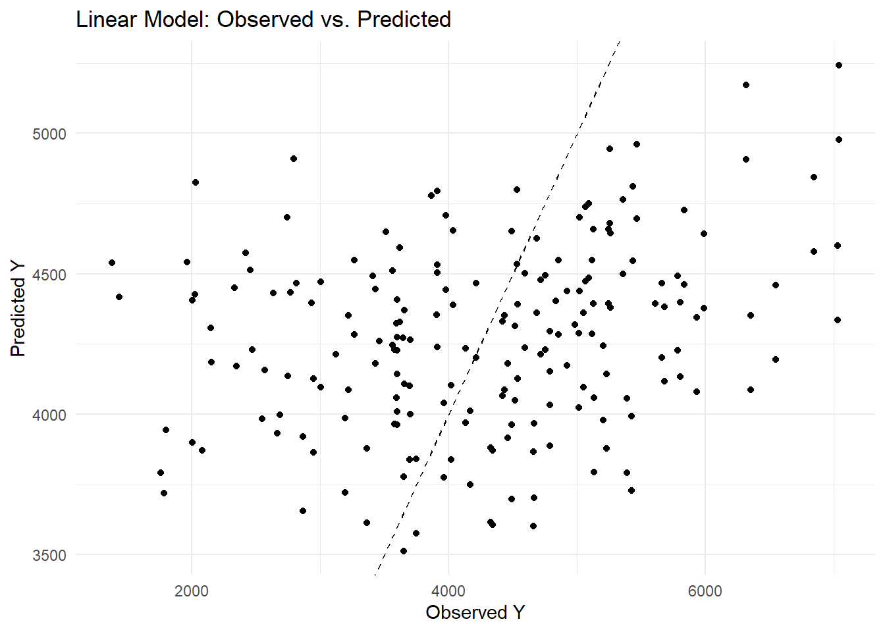
Model 2: LASSO Regression
# Model 2: LASSO Regression (penalty = 0.1, mixture = 1 for LASSO)lasso_recipe <-recipe(Y ~ DOSE + AGE + SEX + RACE + WT + HT, data = Mav.final_data_selected) %>%step_dummy(all_nominal_predictors())lasso_model <-linear_reg(penalty =0.1, mixture =1) %>%set_engine("glmnet") %>%set_mode("regression")lasso_workflow <-workflow() %>%add_model(lasso_model) %>%add_recipe(lasso_recipe)lasso_fit <- lasso_workflow %>%fit(data = Mav.final_data_selected)
Model 3: Random Forest using ranger
# Model 3: Random Forest using ranger (with seed = 1234)rf_recipe <-recipe(Y ~ DOSE + AGE + SEX + RACE + WT + HT, data = Mav.final_data_selected)rf_model <-rand_forest() %>%set_engine("ranger", seed =1234) %>%set_mode("regression")rf_workflow <-workflow() %>%add_model(rf_model) %>%add_recipe(rf_recipe)rf_fit <- rf_workflow %>%fit(data = Mav.final_data_selected)rf_predictions <-predict(rf_fit, new_data = Mav.final_data_selected) %>%bind_cols(Mav.final_data_selected)rf_rmse <-rmse(rf_predictions, truth = Y, estimate = .pred)print("Random Forest Model RMSE:")
[1] "Random Forest Model RMSE:"
print(rf_rmse)
# A tibble: 1 × 3
.metric .estimator .estimate
<chr> <chr> <dbl>
1 rmse standard 583.
ggplot(rf_predictions, aes(x = Y, y = .pred)) +geom_point() +geom_abline(slope =1, intercept =0, linetype ="dashed") +labs(title ="Random Forest: Observed vs. Predicted",x ="Observed Y", y ="Predicted Y") +theme_minimal()
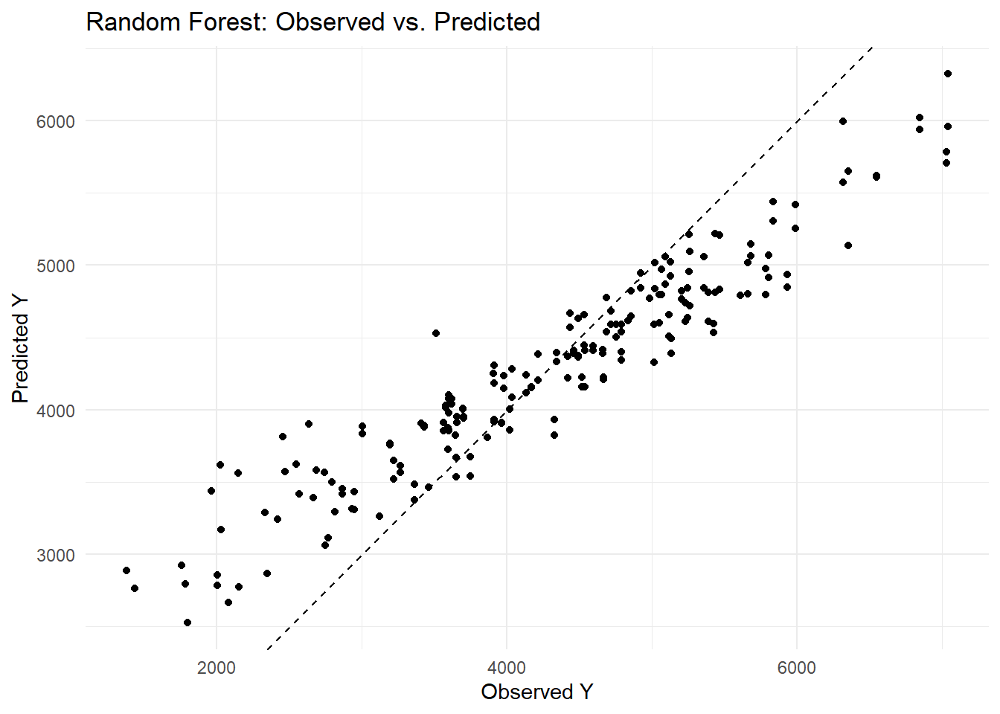
I encountered an error because glmnet expects a numeric matrix, so I needed to convert my factor variables (SEX and RACE) into dummy variables. I fixed this by adding the step_dummy(all_nominal_predictors()) in my recipe. Then, when selecting the best penalty, I used the named argument metric = “rmse” in the select_best() function to avoid the error about the extra argument. This updated code now properly tunes the LASSO model. I found that my linear model produced an RMSE of about 1183, while the random forest model achieved a much lower RMSE of around 582. When I examined the observed versus predicted plots, I noticed that the linear model’s predictions were more scattered around the diagonal—indicating larger residuals—whereas the random forest’s predictions clustered closely along the 45° line. This tells me that the random forest captures much more of the variability in Y and yields more accurate predictions than the linear model.
Tuning the models
The code I wrote to tune both the LASSO and random forest models using the apparent resamples, followed by my explanation of the results.
# LASSO Tuning# Define a LASSO model with a tunable penalty (mixture = 1 for pure LASSO)lasso_model <-linear_reg(mode ="regression", penalty =tune(), mixture =1) %>%set_engine("glmnet")# Update the recipe to create dummy variables for factor predictorslasso_recipe <-recipe(Y ~ DOSE + AGE + SEX + RACE + WT + HT, data = Mav.final_data_selected) %>%step_dummy(all_nominal_predictors())# Create the workflowlasso_workflow <-workflow() %>%add_model(lasso_model) %>%add_recipe(lasso_recipe)# Create a grid for penalty from 1E-5 to 1E2 (50 values on a log scale)lasso_grid <-tibble(penalty =exp(seq(log(1E-5), log(1E2), length.out =50)))# Create 10-fold cross-validation resamples instead of using apparent()lasso_cv <-vfold_cv(Mav.final_data_selected, v =10)# Tune the LASSO model over the grid using the CV resampleslasso_tune <-tune_grid( lasso_workflow,resamples = lasso_cv,grid = lasso_grid)# Visualize the tuning resultsautoplot(lasso_tune)
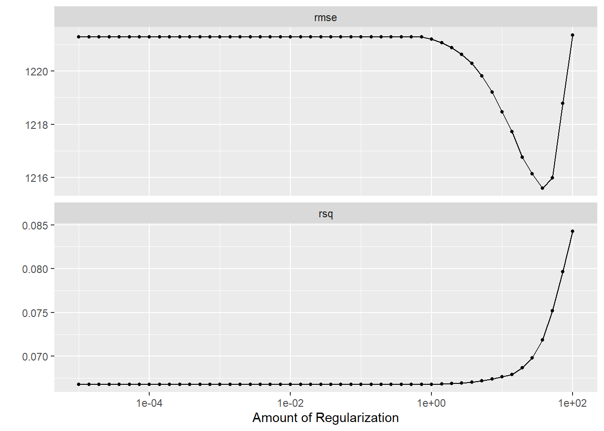
# Define a random forest model with tunable mtry and min_n, fixing trees at 300, and ensuring reproducibilityrf_model <-rand_forest(mtry =tune(), trees =300, min_n =tune()) %>%set_engine("ranger", seed =1234) %>%set_mode("regression")rf_recipe <-recipe(Y ~ DOSE + AGE + SEX + RACE + WT + HT, data = Mav.final_data_selected)rf_workflow <-workflow() %>%add_model(rf_model) %>%add_recipe(rf_recipe)# Define a tuning grid for mtry (range 1 to 7) and min_n (range 1 to 21) with 7 levels eachrf_grid <-grid_regular(mtry(range =c(1, 7)),min_n(range =c(1, 21)),levels =7)# Use 10-fold cross-validation instead of apparent resamplesrf_cv <-vfold_cv(Mav.final_data_selected, v =10)# Tune the random forest model over the grid using the CV resamplesrf_tune <-tune_grid( rf_workflow,resamples = rf_cv,grid = rf_grid)
→ A | warning: ! 7 columns were requested but there were 6 predictors in the data.
ℹ 6 predictors will be used.
There were issues with some computations A: x1
There were issues with some computations A: x2
There were issues with some computations A: x8
There were issues with some computations A: x14
There were issues with some computations A: x20
There were issues with some computations A: x26
There were issues with some computations A: x31
There were issues with some computations A: x37
There were issues with some computations A: x43
There were issues with some computations A: x48
There were issues with some computations A: x54
There were issues with some computations A: x59
There were issues with some computations A: x66
There were issues with some computations A: x70
# Visualize the tuning resultsautoplot(rf_tune)
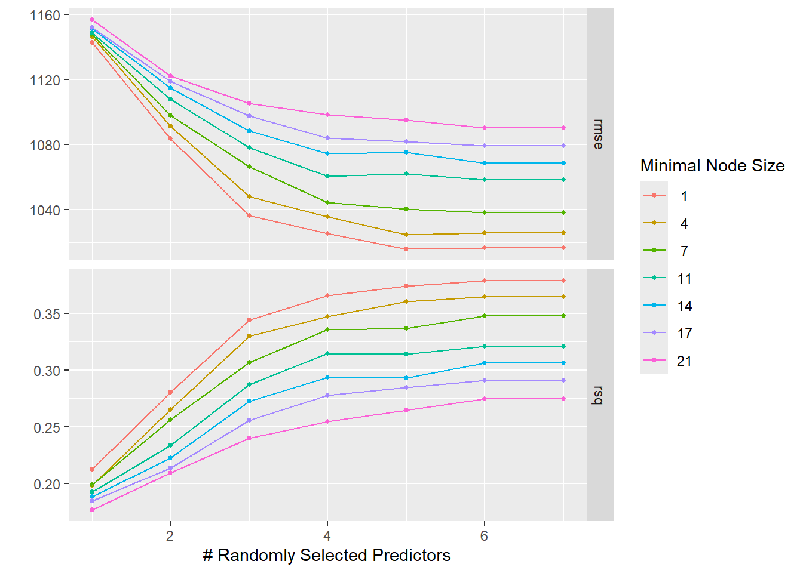
In the LASSO plot, I observed that the lowest penalty values (around 1e-5) yield the best performance—lowest RMSE and highest R²—indicating that LASSO behaves almost like an ordinary linear model when barely regularized. As the penalty increases, the RMSE worsens and R² drops due to stronger coefficient shrinkage. In the random forest plot, the best performance occurs with higher mtry values and lower min_n, suggesting that considering more predictors per split and allowing smaller terminal nodes improves fit, although this may increase overfitting risk.
Tuning with CV
# Reset seed and create 5-fold cross-validation repeated 5 times (25 resamples)set.seed(1234)cv_resamples <-vfold_cv(Mav.final_data_selected, v =5, repeats =5)# --- Tuning LASSO with repeated CV ---lasso_tune_cv <-tune_grid( lasso_workflow,resamples = cv_resamples,grid = lasso_grid)# Visualize the LASSO tuning resultsautoplot(lasso_tune_cv)
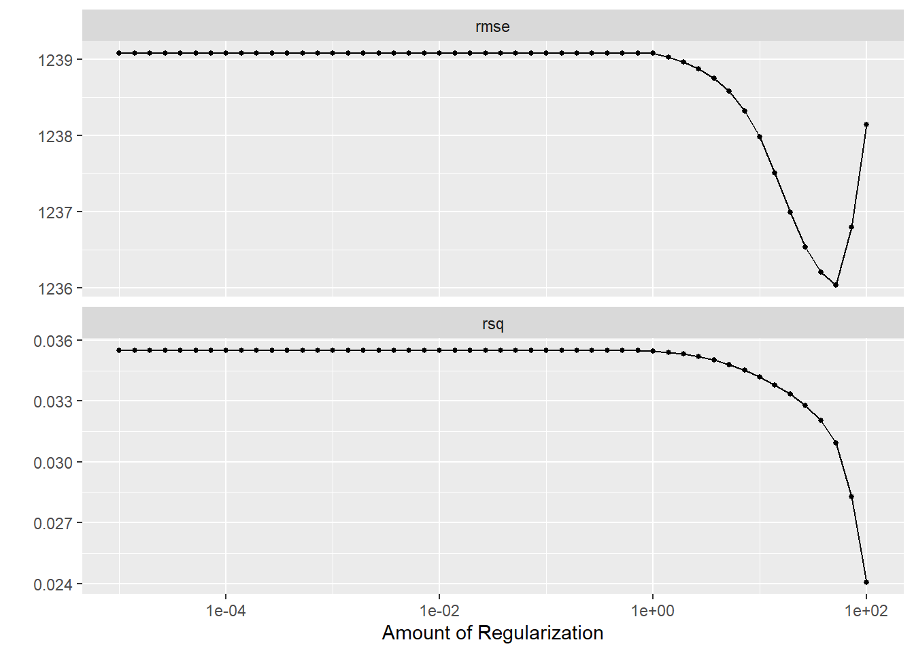
# --- Tuning Random Forest with repeated CV ---rf_tune_cv <-tune_grid( rf_workflow,resamples = cv_resamples,grid = rf_grid)
→ A | warning: ! 7 columns were requested but there were 6 predictors in the data.
ℹ 6 predictors will be used.
There were issues with some computations A: x1
There were issues with some computations A: x3
There were issues with some computations A: x10
There were issues with some computations A: x17
There were issues with some computations A: x24
There were issues with some computations A: x31
There were issues with some computations A: x37
There were issues with some computations A: x44
There were issues with some computations A: x51
There were issues with some computations A: x58
There were issues with some computations A: x65
There were issues with some computations A: x72
There were issues with some computations A: x78
There were issues with some computations A: x85
There were issues with some computations A: x92
There were issues with some computations A: x98
There were issues with some computations A: x105
There were issues with some computations A: x112
There were issues with some computations A: x118
There were issues with some computations A: x125
There were issues with some computations A: x132
There were issues with some computations A: x139
There were issues with some computations A: x146
There were issues with some computations A: x152
There were issues with some computations A: x158
There were issues with some computations A: x165
There were issues with some computations A: x172
There were issues with some computations A: x175
# Visualize the RF tuning resultsautoplot(rf_tune_cv)
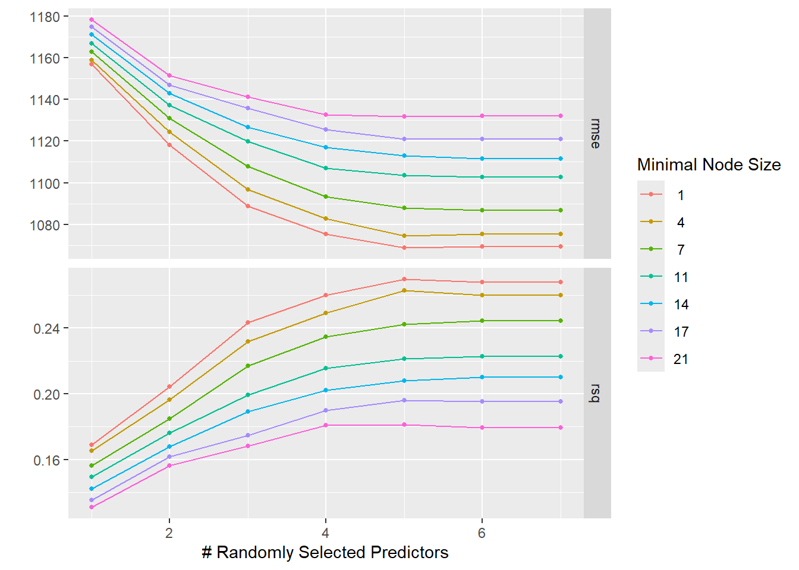
In the LASSO plot (top), the best performance occurs at low penalty values (around 1e-4 to 1e-3), where the RMSE is roughly 1236 and the R² is highest. As the penalty increases, the model’s coefficients shrink more aggressively, driving up the RMSE and lowering R². This aligns with how LASSO behaves like an ordinary linear model at very small penalties, and becomes more constrained (and thus less accurate here) as the penalty grows.
In the random forest plot (bottom), higher values of mtry (number of predictors sampled at each split) and smaller minimal node sizes (min_n) yield the lowest RMSE (around 1080) and the highest R² (about 0.27). This indicates that a more flexible forest, which considers more predictors per split and allows smaller terminal nodes, better fits the data under these tuning conditions—though such flexibility also heightens the risk of overfitting.
Conclusion
Based on my results, the linear model and low-penalty LASSO perform similarly with moderate errors and some underprediction at high values while the random forest achieves a much lower RMSE and its predictions align closely with the 45° line, indicating better capture of data variability despite its complexity. Including the output graphs is useful for visual demonstration, but summarizing key metrics with a representative plot can suffice if brevity is needed.